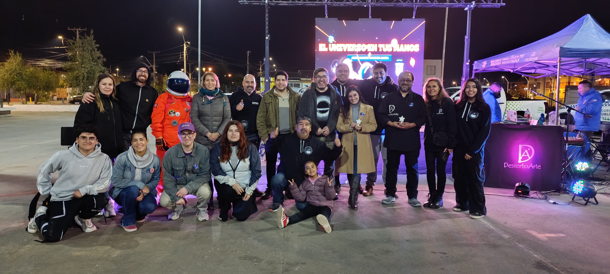

Home
Astroamigos Wintata Wara
Group Objectives
Scientific Communication:
Bridge the gap between academia and the general public through engaging astronomical content.
Inclusion:
Bring astronomy to schools and communities with limited access to scientific resources.
Public Observations:
Organize stargazing events to share the wonders of the universe through telescopes.
Collaboration:
Work alongside institutions like the Manuel Foster Observatory to preserve astronomical heritage.
Team Members
René Ramirez
Representative
Gabriel Farias
Astrophotographer
Axel Andrade
Astrophotographer
Sofia Ramirez
Science Communicator
Hernán Salinas
Astronomer
Activity Gallery
Collaboration with the Manuel Foster Observatory
"El Universo en tus Manos N°2" Event Team

Educational Workshop: "El Universo en tus Manos"
Solar Observation and Imaging
Outreach Activities in local schools